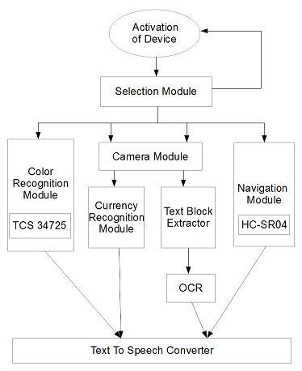

Impact: An assistive
aid for visually
impaired that
will help them in color identification,currency denomination recognition, obstacle detection as well
as
reading newspapers and books. It is a portable device with processing being done on-chip and then
aural
output produced.
My Role:
Prototyping, Software Development (ML, Image Processing)
Timeline: Feb 2014 - May 2015
Team Members: Ishaani | Apoorva Mittal
My Role:
Prototyping, Software Development (ML, Image Processing))
Timeline: Feb 2014 - May 2015
Team Members: Ishaani | Apoorva Mittal
Overview
Features
Color recognition to help differentiate between simple colors
Indoor navigation to help visually impaired move without hitting objects in the
surrounding
Currency note recognition to carry out day to day transactions
Audio book output to help visually impaired read books, articles and newspapers
Research
SELECTION MODULE
The main design
consideration here was to design the selection module so that the user experience is not
compromised. We
needed a special mechanism of feedback since the device targets a special group of people.
Hence, the
device is designed to specifically handle the accidental selection of module by providing an
instant
audio feedback to the user asking him to confirm his selection within 5 seconds of the first
registered
request. In this way along with providing a better experience for the user, we even help
save
unnecessary processing of data.

Figure: Selection Module
CURRENCY RECOGNITION SYSTEM
Figure: Example of 1000Rs
Note
Bag Of Words algorithm is
used to
implement this software; SIFT descriptor is used to retain the key point features. Bag of
Words
algorithm
helps in plotting a histogram of occurrence of keypoints. These histograms are then send to
1-v/s-all
SVM
classifier. The vocabulary trained is 1000 feature-long. The classifier is trained on 1000
images and
tested
on 700 images. The average accuracy of the module is 88.25%.
READING MODULE
The flow of the device looks like something shown in the image. The image is first clicked
from the device. The captured image is then sent to the Text Block Extractor(TBE), where the
image is processed and paragraphs extracted. These paragraphs are then sent to an OCR
(Tesseract in our case) to extract the text. After the text has been extracted, we make use
of text to speech converter (flite in our case) to convert the text into speech. This speech
is then heard by the user through his ear piece.
Figure: Reading Device
Overview
Text Block Extraction is a two fold method where we analyse the image under consideration in
two orientations both horizontal and vertical. The analysis of the image begins with
thresholding the image and the converting the image into blocks of white and black
background. Two kinds of windows are used for this technique as shown in the image. The
windows are used to check for neighborhood white boxes where the center box is in
consideration. The image obtained is then analysed for the neighbourhood of 7 by 7 windows
with Ib, where Ib signifies black intensity and Iw signfies white intensity. If the
neighbourhood window contains more than or equal to 50 percent of white pixels then the
black box is converted into white.
Figure: Window One
Figure: Window Two
Figure: Plot of vertical separation
After the window analysis done in the previous slide, the image is traversed vertically and BlackCount is found out. BlackCount gives the number of black windows in a column. Local Maxima of the dataset obtained from the image is calculated. This local maxima signifies the vertical paragraph breaks in an image.
Figure: Sample News Paper Image
Figure: Block Extraction
Figure: Lines showing Paragraph Separation
Figure: Single Paragraph Extraction
The algorithm is able to extract text from the input even if the text is accompanied by some non-textual part but major part of the image needs to be text. For this condition to be true, the optimal distance of the camera from the image was determined experimentally to be around 15-20 cm. The source and camera need to be stable so as to capture an image with maximum clarity. The background of text is required to be invariantly white. To determine the efficiency of the TBE algorithm, two parameters were calculated, PrecisionRate and Recall where Precision is TrueParagraphs by TotalRetrievedParagraphs and Recall is TrueParagraphs by TotalTrueParagraphs.
RESULTS
Table 1 : Accuracy for Different colors
Color
Accuracy
Yellow
100 %
Orange
100 %
Gray
78 %
Green
85.4 %
Blue
82.1 %
Table 2 : Accuracy for Different Currency Denominations
Currency (Rs.)
Accuracy
50
85.06 %
100
100 %
500
77.95 %
1000
90 %
Table 3 : Efficiency for the three category of images